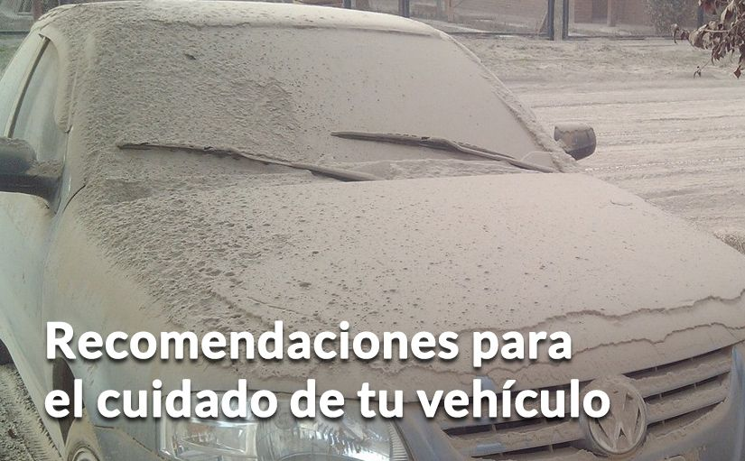

Ante caída de ceniza, mantén cubierto tu vehículo con una manta de tela.
Ante caída de ceniza, mantén cubierto tu vehículo con una manta de tela.|  |
Ante caída de ceniza, mantén cubierto tu vehículo con una manta de tela.
Asegúrate de no encenderlo: la ceniza se funde cuando entra en contacto con un motor caliente y puede dañarlo.
Si tu vehículo ha estado a la intemperie durante la caída de ceniza, límpialo con una escobilla o cepillo y luego lávalo con abundante agua, solo cuando las autoridades dispongan el libre uso del agua. Asegúrate de tener cubierto tu cuerpo, ojos y nariz.